Následující den byl, co se týče počasí, asi nejhorší za celý náš pobyt v Londýně. Krom toho, že byla pěkná kosa, to od rána navíc vypadalo na déšť. A to se nám vůbec, ale vůbec nelíbilo - vyráželi jsme totiž na výlet do Greenwiche. Když jsme vylezli na stanici metra u O2 Areny, zjistili jsme, že k observatoři je to ještě pěkná štreka pěšky. Ocitli jsme se v jakési průmyslové zóně, kde nejen že chcípnul pes, ale navíc tady nebyl ani žádný záchytný bod, podle kterého bychom se mohli zorientovat a najít cestu. Takto zoufalé nás potkal jeden milý pán venčící pejska, a zeptal se, kam bychom potřebovali. Řekli jsme, že hledáme observatoř v Greenwichi. Úplně přesně jsme nepochopili, co nám radí, ale porozuměli jsme, že se tam dostaneme autobusem a je to asi sedm zastávek odsud. A tak jsme se zaradovali a naskočili do našeho prvního double deckeru :-)! Měli jsme štěstí, že jsme se octnuli v okrajové části, kde se to turisty zrovna nehemžilo. Celé horní patro autobusu jsme tak měli pro sebe a mohli blbnout s foťákem :-).
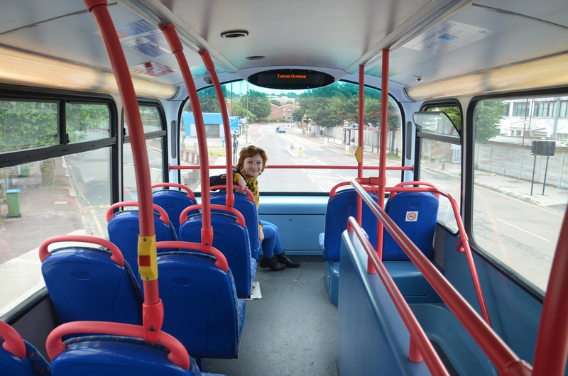
První jízda v double-deckeru :)
Cesta patrovým autobusem byla pro mě určitě jednou z nejlepších atrakcí Londýna. Bylo to hrozně napínavé, protože jsme vlastně vůbec nevěděli, kam jedeme. Vystoupili jsme sice trochu předčasně, ale nakonec se nám Queen’s House a záhy i observatoř skutečně podařilo najít.
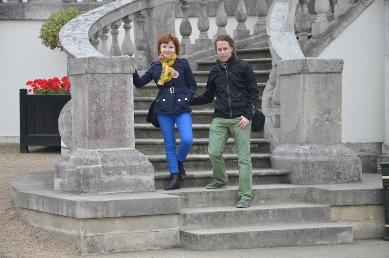
Před Queen’s House
Byli bychom se hned vydali nahoru k nultému poledníku… to bychom ale nesměli po cestě potkat National Maritime Museum. Původně jsme se chtěli podívat jen dovnitř a hned zas jít, ale milá paní u poklady se nás ujala a vysvětlila, co všechno si tu můžeme prohlédnout a ke kterým expozicím je volný vstup. A tak jsme úplně změnili plány a celé dopoledne strávili v muzeu.
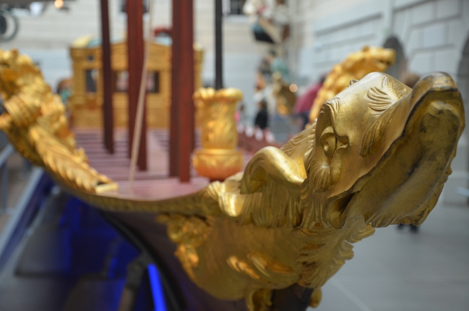
National Maritime Museum
National Maritime Museum bylo úžasné - vlastně jako všechna londýnská muzea, která jsme navštívili :-). Všechno je tak krásně udělané, že si návštěvu muzea užijí děti i dospělí. Samozřejmostí je spousta interaktivních koutků. Není divu, že muzea jsou plná dětí ve školních uniformách (jen nám bylo divné, že na začátku července ještě nemají prázdniny, chudinky :D!). Najdete tu všechno - od významných britských mořeplavců přes dobývání severního pólu až po obchodní cesty do Indie. Moc se nám tu líbilo a zdaleka jsme nestihli všechno, co muzeum nabízí. Vyhnal nás ale hlad - jako obvykle :D.
Přes Trip Adviser jsme našli tip na nedalekou restauraci Goddards at Greenwich. Tento stylový podnik s milou obsluhou si nás okamžitě získal. Rozhodli jsme se vyzkoušet konečně také něco tradičního z britské kuchyně. V nabídce najdete různé druhy plněných koláčů, ke kterým se podává bramborová kaše a omáčka dle výběru. Pie mi přišel docela hutný, ale byl dobrý a zasytil a omáčka i kaše mi také chutnaly. Rozmazlili jsme se ještě kávičkou a horkou čokoládou a odcházeli jsme naprosto spokojení. Pokud se někdy zatouláte do Greenwiche, tato restaurace je určitě dobrá volba :-).
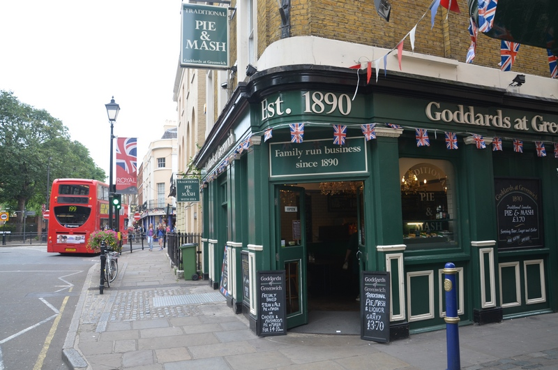
Goddards at Greenwich
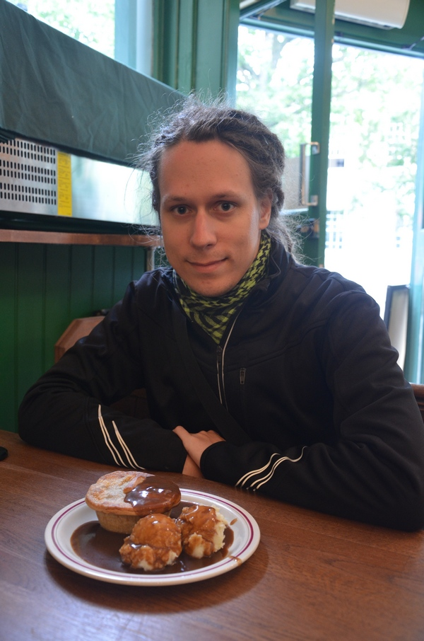
Pie & mash
Na konci ulice, kde se nachází Goddards, najdete obrovskou plachetnici Cutty Sark, která v sobě ukrývá další muzeum. My už jsme ale byli celí nedočkaví a tak jsme ještě honem odlovili kešku (Péťa říká, že každý správný geolovec musí mít kešku z nultého poledníku :D) a vydali se konečně k té slavné observatoři.
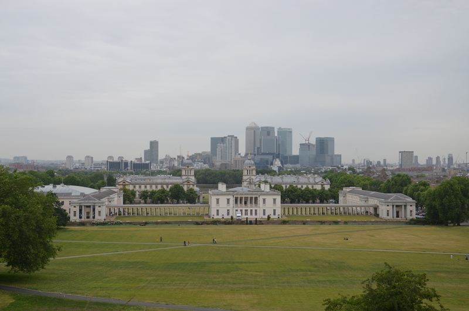
Cesta k observatoři, pod námi Queen’s House
V National Maritime Museum jsme dostali přehledný plánek s vyznačenými částmi Royal Observatory, kam je volný vstup. Je to tak padesát na padesát - slavná čára s nultým poledníkem je samozřejmě za branou a bez vstupenky se tam nedostanete. Na druhou stranu je ale poledník naznačený i mimo tuto oplocenou část a kdo tu fotku s jednou nohou na pravé a s druhou na levé polokouli fakt moc chce, má ji mít :-)…
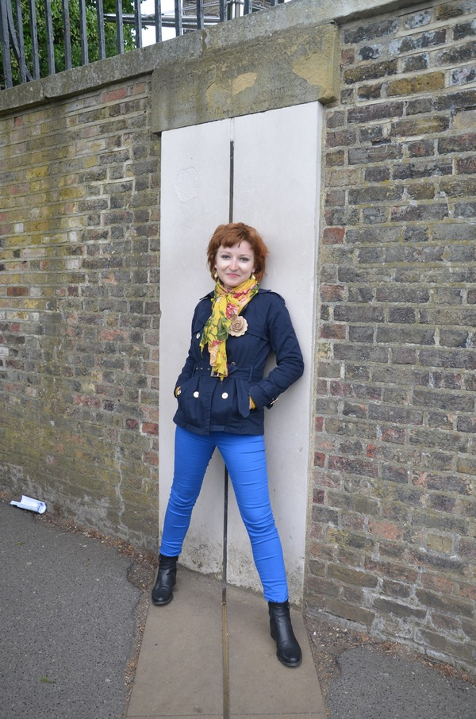
Mezi dvěma polokoulemi
My jsme za vstupenku utrácet nechtěli a spokojili jsme se s částmi expozice, které jsou volně přístupné. V této části najdete například výstavu o měření času a vývoji hodin. Promítají se zde také zajímavá videa o sluneční soustavě. Zatoulali jsme se také do krásného parku přímo pod observatoří, kde jsme potkali pána krmícího ochočené veverky. Byly opravdu krotké, takže jsme si je mohli prohlédnout úplně zblízka.
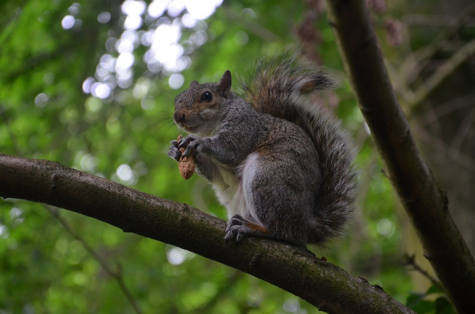
Veverka z Greenwiche
V Greenwichi jsme také zažili náš první a poslední anglický déšť. Trval sotva deset minut :-). Poté už jsme se u observatoře nezdržovali a vyrazili dolů na autobus, který nás měl dopravit zpátky do City. Cesta trvala asi hodinu, seděli jsme v patře úplně vepředu a byla to prostě skvělá vyhlídková jízda. A navíc za zlomek ceny, za kterou podobnou cestu nabízí turistické autobusy :D! Vystoupili jsme nedaleko chrámu Temple. Záhy jsme zjistili, že je to zdejší “soudní” čtvrť - kravaťáky se to tu jen hemžilo :-). Sídlí tu také dvě ze čtyř londýnských právnických škol. Zdejší architektura se mi moc líbila a za lepšího počasí to musí být báječné místo k náhodnému bloumání ulicemi Londýna :-).
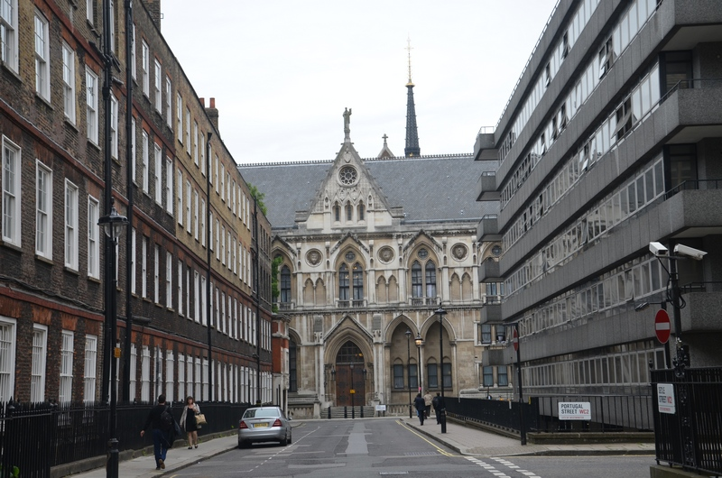
Cestou k Temple
Cestou jsme si neodpustili také foto s červenými telefonními budkami - a tak bylo ten den londýnským klišé učiněno zadost :-).
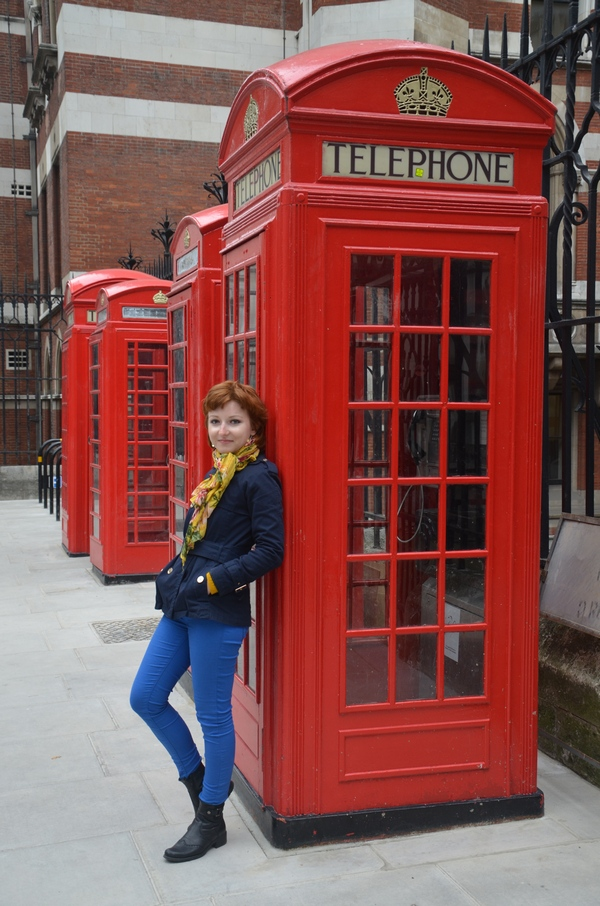
S červenou budkou
Na návštěvu St. Paul jsme neměli štěstí. Dorazili jsme přecejen dost pozdě a katedrála už byla bohužel zavřená. Tak až tam někdo pojedete, nezapomeňte jít dovnitř a pak mi povyprávět, jaké to tam je :-)! Chrám je obrovský - spoustu času zabere jen obejít ho celý kolem dokola. Kopule je prý druhá největší po dómu Svatého Petra v Římě.
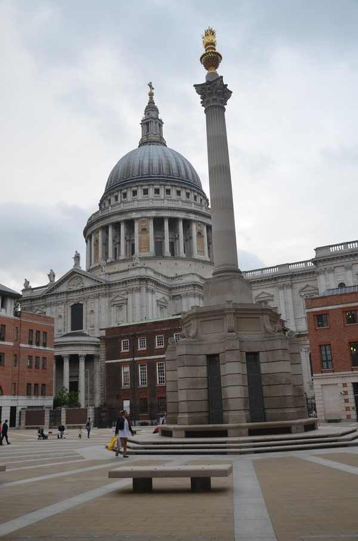
St. Paul’s Cathedral
Naší poslední zastávkou se stal opět Westminster s cílem vyfotit si noční Big Ben a London Eye. Následovala tedy poslední okružní jízda double deckerem a poté mrznutí na břehu Temže, než se konečně pořádně setmělo a Big Ben rozzářil svá světla. Pokud jedete do Londýna s podobnou touhou po nočních fotkách, vřele doporučuju zabalit si s sebou nějaké termo-prádlo :D…
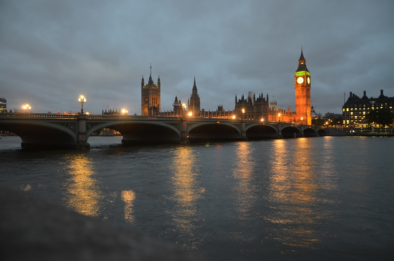
Večer u Temže
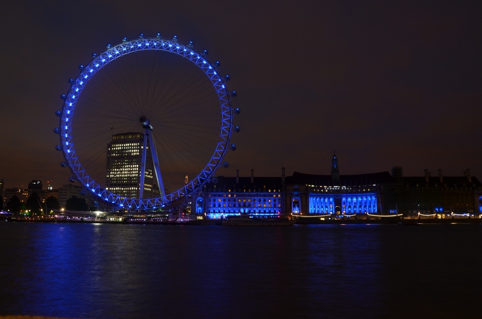
London Eye a Aquarium
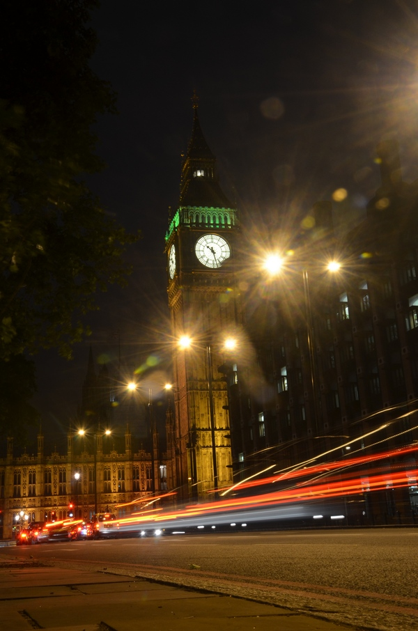
Big Ben